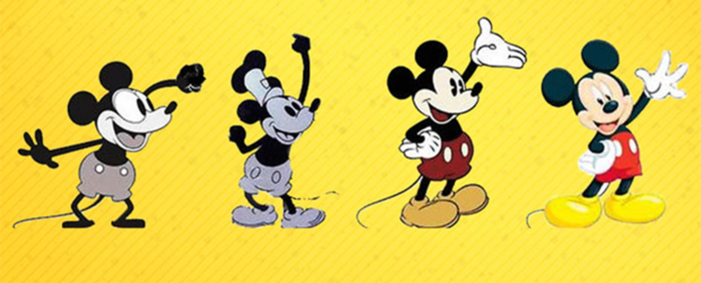
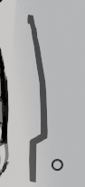
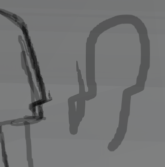
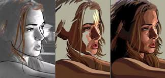

Objectif Initial
Mon objectif était d'apprendre les bases de l'art numérique et de l'animation. Dans ce cas précis, l'animation sur Blender avec Krita comme outil de scénarimage.
Mon objectif était d'apprendre les bases de l'art numérique et de l'animation. Dans ce cas précis, l'animation sur Blender avec Krita comme outil de scénarimage.

Pour trouver l'inspiration, j'avais toujours la Rome antique en tête pour créer mon histoire. Mais en l'expliquant à ma copine, fan de Percy Jackson, j'ai vite réalisé que les histoires grecques et romaines étaient deux choses différentes. J'ai donc décidé de les mélanger pour créer un nouvel univers de fiction. C'est ainsi que j'ai intégré un style de dessin de type anime dans un environnement 3D.
Honnêtement, il y a encore des aspects à travailler, mais je suis satisfait des progrès accomplis.
Tout au long de l'animation, on observe l'évolution du personnage, que ce soit au niveau du dessin ou des couleurs ; plus la vidéo avance, plus il devient détaillé. C'était un choix délibéré, car il s'agissait aussi de montrer ma propre progression en tant qu'animateur débutant, au cours des six semaines de réalisation.

Description.


L'utilisation de la rotoscopie m'a vraiment été d'une grande aide, car sans l'onion skin, l'animation aurait été impossible. Pour compenser les coups de pinceau irréguliers, peindre directement et effacer les bords dentelés a permis de masquer efficacement les défauts.
